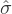

7Okay, I’m hiding something else here. In a bizarre and counter-intuitive twist, since 2 is an unbiased
estimator of σ2, you’d assume that taking the square root would be fine and  would be an unbiased
estimator of σ. Right? Weirdly, it’s not. There’s actually a subtle, tiny bias in
would be an unbiased
estimator of σ. Right? Weirdly, it’s not. There’s actually a subtle, tiny bias in  . This is just bizarre:
. This is just bizarre:  2
is an unbiased estimate of the population variance σ2, but when you take the square root, it turns
out that is a biased estimator of the population standard deviation σ. Weird, weird, weird, right?
So, why is
2
is an unbiased estimate of the population variance σ2, but when you take the square root, it turns
out that is a biased estimator of the population standard deviation σ. Weird, weird, weird, right?
So, why is  biased? The technical answer is “because non-linear transformations (e.g., the square
root) don’t commute with expectation”, but that just sounds like gibberish to everyone who hasn’t
taken a course in mathematical statistics. Fortunately, it doesn’t matter for practical purposes. The
bias is small, and in real life everyone uses
biased? The technical answer is “because non-linear transformations (e.g., the square
root) don’t commute with expectation”, but that just sounds like gibberish to everyone who hasn’t
taken a course in mathematical statistics. Fortunately, it doesn’t matter for practical purposes. The
bias is small, and in real life everyone uses  and it works just fine. Sometimes mathematics is just
annoying.
and it works just fine. Sometimes mathematics is just
annoying.